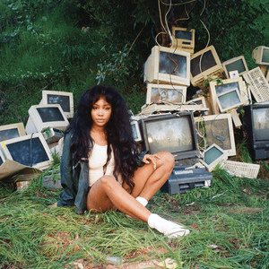
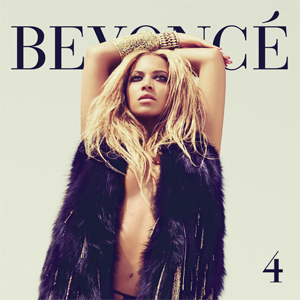

Stevie Wonder, Innervisions
Innervisions is the sixteenth studio album by American singer, songwriter, and musician Stevie Wonder, released on August 3, 1973, by Tamla, a subsidiary of Motown Records. A landmark recording of Wonder's "classic period", the album has been regarded as completing his transition from the "Little Stevie Wonder" known for romantic ballads into a more musically mature, conscious, and grown-up artist.

SZA, CTRL
Ctrl (pronounced "Control") is the debut studio album by American singer SZA. It was released through Top Dawg Entertainment and RCA Records on June 9, 2017. The album features guest appearances from Travis Scott, Kendrick Lamar, James Fauntleroy, and Isaiah Rashad. Production was handled by Craig Balmoris, Frank Dukes, Carter Lang, Scum, and ThankGod4Cody, among others. The album was supported by five singles: "Drew Barrymore", "Love Galore", "The Weekend", "Broken Clocks", and "Garden (Say It like Dat)", all of which are certified Platinum or higher by the Recording Industry Association of America (RIAA).

Beyoncé, 4
4 is the fourth studio album by American singer-songwriter Beyoncé. It was released on June 24, 2011, by Parkwood Entertainment and Columbia Records. Following a career hiatus which reignited her creativity, Beyoncé was inspired to create a record with a basis in traditional rhythm and blues that stood apart from contemporary pop. Her collaborations with songwriters and record producers The-Dream, Tricky Stewart and Shea Taylor produced a mellower tone, developing diverse vocal styles and influences from funk, hip hop, and soul music. Severing professional ties with father and manager Mathew Knowles, Beyoncé eschewed the music of her previous releases in favor of an intimate, personal album. Lyrical themes of 4 emphasize monogamy, female empowerment and self-reflection, a result of Beyoncé considering a maturer message to contend artistic credibility. In May 2011, Beyoncé submitted 72 songs to Columbia Records for consideration, 12 of which would appear on the standard edition.

Ariana Grande, Thank U, Next
Thank U, Next is the fifth studio album by American singer Ariana Grande. It was released on February 8, 2019, by Republic Records, six months after her fourth studio album Sweetener (2018), which was conceived in the midst of Grande's personal struggles, including the death of ex-boyfriend Mac Miller and the end of her engagement to Pete Davidson.
Chance the Rapper, Coloring Book
Coloring Book is the third mixtape by American rapper Chance the Rapper. It was produced by his group The Social Experiment, Lido, and Kaytranada, among others. For the mixtape, Chance also collaborated with musicians such as Kanye West, Young Thug, Francis and the Lights, Justin Bieber, 2 Chainz, Kirk Franklin, and the Chicago Children's Choir. Coloring Book was released on May 13, 2016, exclusively on Apple Music, before being made available to other streaming services on May 27. It was the first mixtape to chart on the US Billboard 200 solely on streams, peaking at number eight, while receiving widespread acclaim from critics who praised its fusion of hip hop and gospel sounds. The mixtape won Best Rap Album at the 2017 Grammy Awards. It was also the first streaming-only album ever to win a Grammy.

Childish Gambino, "Awaken, My Love!"
"Awaken, My Love!" is the third studio album by American recording artist Donald Glover, under his stage name Childish Gambino. It was released by Glassnote Records on December 2, 2016. Consisting of tracks being sung rather than rapped, its fusion of psychedelic soul, funk and R&B influences was considered a bold departure from the predominantly hip hop style of his prior work. The album was produced by Glover and his longtime collaborator, Ludwig Göransson.